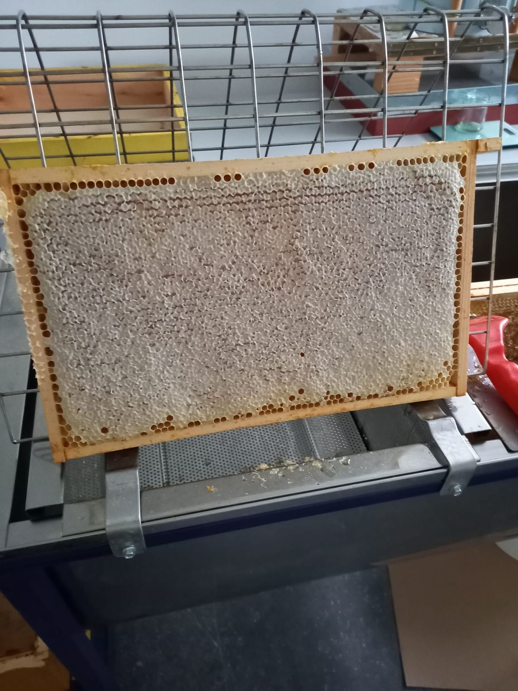

Zomerhoning – vloeibaar
Mild en bloemig, met een zachte afdronk. Heerlijk in thee of op yoghurt.
Pot 450 g€ 9
Rauwe honing van bijen die vliegen op de bloemen, bomen en akkerranden rond Sint-Katelijne-Waver. Koud geslingerd, niet verhit en zonder toevoegingen.
Het aanbod hangt af van het seizoen en van wat de bijen kunnen missen. Op is op.
Mild en bloemig, met een zachte afdronk. Heerlijk in thee of op yoghurt.

Fijn gekristalliseerd en smeerbaar. Blijft mooi op de boterham.

Om te proeven of als klein cadeau. Vraag naar de beschikbare soort.
Geen webshop, gewoon persoonlijk contact.
Laat weten wat u wilt via telefoon of WhatsApp op +32 476 41 67 24.
We bevestigen wat er voorradig is en wanneer u kunt langskomen.
Afhalen aan huis in de Loozenhoek. Betalen kan cash of via overschrijving.
Honing kristalliseert na verloop van tijd vanzelf: een teken van echte, onbewerkte honing. Even au bain-marie (max. 40 °C) maakt hem weer vloeibaar.